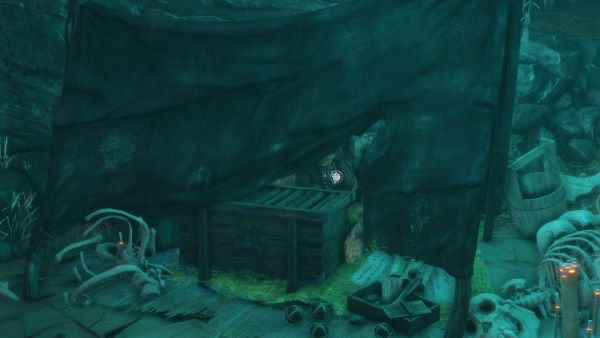
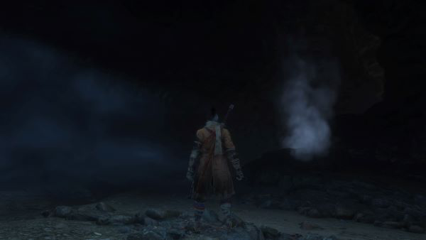
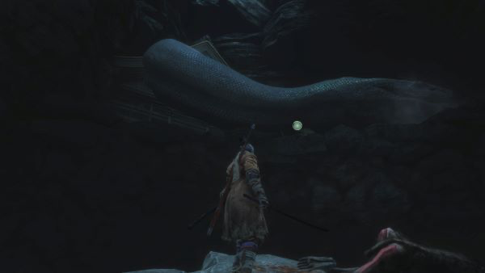
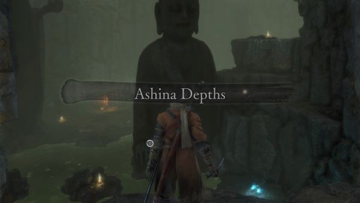

BLESSING 01
紙人斷食 · 禁爆竹
全程唔使神樂鈴爆竹。靠走位、彈反同火傷過第一階段。


爆竹＋噴火筒（＋油）；解毒粉、丸藥
機關長槍＋鐵傘；驅怖粉／紫葫蘆、丸藥
下面用卡片＋篩選睇招；短片可選展開。實戰長節錄預設摺埋。
大白蛇擋路——睇片、跟步驟、用傀儡術過關。唔使答題，內容完全開放。
見洞內大白蛇擋路 → 左跳發抖猴台 → 背刺＋傀儡術 → 猴引蛇 → 鈎索衝入神廟攞干柿（Dried Serpent Viscera）。
來源： Fuzzy Bearbarian · SEKIRO: How to Get Past the Cave Snake （YouTube RmfoxIzbLoM · 精剪約 106–149s） 教學用途節錄（fair use educational excerpt），僅供 BOSS 獵殺區攻略示範。
以下五步＝過關正路。硬斬鱗片無用；左邊矮台＋傀儡術先係答案。
招式卡 · 危險度／循環短片／時機軸／Boss↔玩家對照
全程唔使神樂鈴爆竹。靠走位、彈反同火傷過第一階段。
二階段唔帶鐵傘、唔食驅怖粉／紫葫蘆。怖氣靠距離同安頭即跑。
每次完美彈後最多補 1 刀。寧穩過貪，練節奏唔練血量。
| 常見死因 | 對策 |
|---|---|
| 危・抓技抱死 | 見紅危標即後跑／後跳，唔好硬擋；成功後補約 3 刀。 |
| 捶地板下段命中 | 紅危＋手臂高舉 → 跳過衝擊波，落地再接戰。 |
| 毒霧／糞疊毒 | 側走離開毒區；預留解毒粉；丟糞落地有長硬直可打。 |
| 五連擊破架後被追 | 擋滿 5 下，最多補 2 刀就收手，唔好貪。 |
| 二階段怖氣滿 | 見蛇扭／安頭即拉開或鐵傘；備驅怖粉／紫葫蘆。 |
| 無頭高舉下劈硬吃 | 完美彈 → 砍 1 → 長槍兩下拉蜈蚣，唔好連砍。 |
| 二階段仲搵爆竹 | 爆竹無效。改彈刀＋長槍節奏。 |
約 104 秒 · 有頭階段節奏參考（文字說明）
約 124 秒 · 無頭持刀節奏參考（文字說明）
以路線圖為主。打完獅猿之後兩條路：攞宮之蓮，或者去葦名之底。撳圖上節點睇步驟同截圖。
撳任一節點 → 下面顯示對應步驟／截圖
↑ 撳路線圖節點，呢度會顯示對應步驟同截圖。
| 你想做咩 | 邊個洞 | 點認 |
|---|---|---|
| 攞 宮之蓮（主線花） | 獅猿戰場後濕洞 | 「獅猿飲水處」隔鄰，蹲低入 |
| 去 葦名之底 | 谷底暗洞（蛇巢） | 菩薩谷鬼佛對面落谷，貼右見毒紀念商人 |
唔好以為打完就可以返城完事。攞完花先去菩薩谷（分支 B）。
起點：菩薩谷鬼佛（唔係飲水處）
傳送／行去菩薩谷鬼佛。呢度係落谷去暗洞嘅起點。

背對獅猿戰場，對面山谷落去，樹枝鉤爪落地。之後貼右牆行。

貼右牆行 → 骷髏棚商人＝毒紀念商人。

商人隔鄰入暗洞（蛇巢）。

大白蛇擋路：左邊矮台搵驚恐猴子，用 傀儡術 引開，再鉤衝入小屋。
※ 傀儡術要先打仙峰寺幻廊屏風猿。未有就先傳仙峰寺，或改由葦名城投身之所跳入葦名之底。


屋內出口鎖住 → 連續鉤爪向上 → 準備出洞。
出洞＝葦名之底・毒池鬼佛。記得解毒，少浸水多跳。

三寶齊後城會變，鬼佛多數熄 → 由 地牢入口 鬼佛返城見九郎。湊齊先開源之宮。
來源：路線圖參考 Fextralife Sunken Valley Passage；本區截圖存於 path-imgs。以路線圖為主，步驟文／圖為輔助。
招式唔清楚、想加邊個 Boss、有錯漏——丢句說話。留言經 Netlify Forms 直達網主信箱／後台，唔再只係本機保存。
你嘅意見已送出俾網主。想再講可以繼續填。
所有招式卡、短片、對策表一律免費開放。想撐「硬核祝福」再出下一個 Boss，可以自願丢一個餅乾。
自願捐款（佔位）唔捐一樣睇晒 · 別人改數值，你改規則。